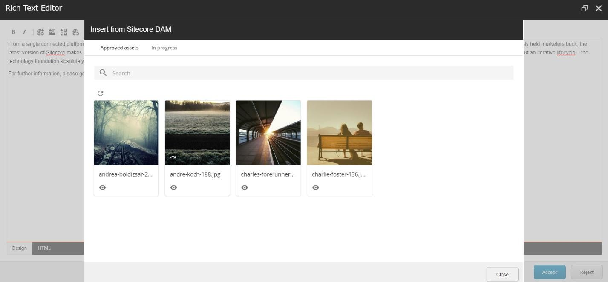
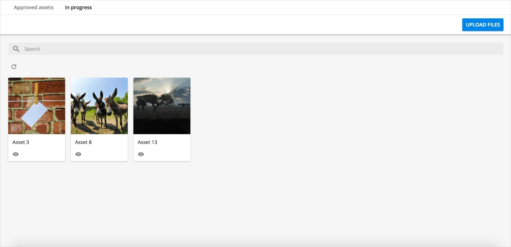
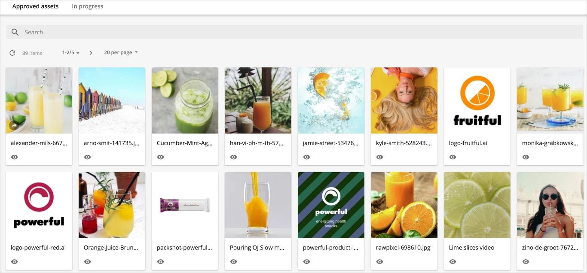

Display assets
How to display Sitecore DAM assets in Sitecore using the Sitecore Connect for Content Hub connector
The Sitecore Connect for Content Hub connector displays the assets in the Sitecore DAM through an iframe.
To open the iframe:
On the Sitecore toolbar, click the Insert from Sitecore DAM icon .
In the Insert from Sitecore DAM dialog box, click Go to login.
Warning
You must save all changes before logging in or they will be lost. As part of the login procedure, the dialog box refreshes, and the content/ experience editor closes. When you are logged in, the refresh will not reoccur.
Log in to Sitecore DAM.
Click the Insert from Sitecore DAM icon again.

Sitecore DAM now displays a new page, together with two child pages that display DAM assets.
Note
Sitecore DAM displays the DAM assets in search pages created in the Sitecore DAM platform. Sitecore DAM super users can fully configure these pages to, for example, include filters, flyouts, and quick edits,
The child pages are:
In progress displays assets from the Create and Review pages of the current user. From this page, you can upload files and create assets.
Approved assets displays all the published assets.
